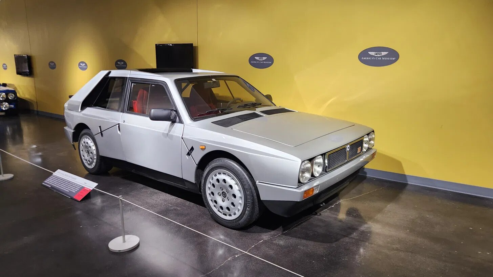

Picture taken by Scott at the LeMay's Car Museum in Tacoma, WA.
The Love
Love... is a complicated thing. It's often unexplainable. How is it that one person can love something so deeply, while someone else has no feelings toward it at all? It's a very argued subject on Reddit believe it or not, and unless you're Shakespeare or Jesus, it's often hard to convey. You could write a song about catching a grenade or just stand in a park strumming a guitar saying, "I love you---". A lot of the time, however, people won't understand your "love" for something, even with your feeble attempts to explain it.
You may be wondering how this relates to the first-generation Lancia Delta. Well, it's because I love the first-generation Lancia Delta. It has wrapped itself around my heart like an octopus on its prey. And there's no way of escaping. It is a car so far beyond the word "cool" that even after 33 years since the end of its Rally career, the Lancia Delta HF is still considered the most successful Rally car OF ALL TIME! That's cool.
There are many reasons why I love the first-generation Lancia Delta. I must specify first-generation because there are currently three generations and unfortunately, the new generations did not receive enough love and care from their parents, so they grew up to be terrible uncultured useless rolling bins. I mean seriously. You dominate in a sport for seven years, scribbling your name in history as the best Rally brand EVER and to celebrate such a feat, you make a car for posh French men who married into Italian families.
The Start
Lancia's character development really doesn't make sense. But we shan't get too hung up on the more present times when we can fixate on the past. Because in the past, Lancia was the shining star all the petrol shepherds needed. And when I say the past, I mean way in the past, because Lancia was first founded in 1906. In fact, the big 12 zero is coming up this November 27. Happy early Birthday, Lancia.
This isn't meant to be a history lesson, but to cobble enough information together to attempt to portray my feelings for the first-generation Lancia Delta, you need some background information. And to make this as painless as possible, we shall make it interesting. We will play a game. In every paragraph, there will be one lie. One item of information that is barely false. Make sense? I'll give you an easy one first. Lancia was the name of the Donkey that carried Mary and Jesus to Bethlehem. Let's get started.
Lancia is an Italian car company. That is very important, so please remember. One thousand eight hundred and eighty-one years after Lancia finished carrying the Baby Jesus to the stable, a man named Vincenzo Lancia was born. He was Italian. He created Lancia. Not the donkey, the car company. Which makes Lancia an Italian car company. ITALIAN. Very important. Anyway, Vince was pretty cool because he was an engineer and a racing driver. He was very good at both of them. He worked for Fiat, which is ironic (you'll get why later), and by 1900 he was chief inspector. Fiat noticed he was pretty good at driving and hired him to drive their cars in races. This disappointed Mr. Lancia because like all Italians, he didn't like to drive fast.
The Vincenzo
Pushing through this struggle, he won the Gold Cup in Milan in 1906. He was a fast driver and he was cool. So cool that his mustache did all the talking for him (this is not a lie). When he eventually built the first Lancia in 1907, the 12 HP, he became an unknown founding father in the automotive industry. The cars he was making were groundbreaking. The 12 HP was a lightweight, high-revving road car that was made for racing. It set a new standard for early motoring and because of its jet propulsion system it reached a record speed of 56 mph.
Using the most of his imagination, Lancia (the man, not the donkey) started to name his cars after the Greek alphabet. Beta, Gamma, Delta, and so on. From 1907 to 1922 Lancia was making a killing. Building cars that were faster, lighter, and smarter than anything else on the market. They weren't selling like Fords, but they were successful. The Lancia Theta in 1913 was the first massive success. It was the first production car in Europe to have a complete electrical system and Apple car play. You may think this is silly but back in this time, electricity was still black magic, so it was a huge leap forward.
Ever since the beginning, Lancia has been focused on making cars for racing. Immediately after the first World War, the Kappa was released, with the Dikappa following behind. The Dikappa was the sports-focused variant that could zoom past at over 300 mph. In a car that has a windscreen large enough to cover one eyeball, a max of 80 mph is fast. Lancia was advancing what it meant to make a race car. And in 1922, he took it one step further.
The First
The Lancia Lambda. This was a phenomenal car. Many historians say the Lambda is the prototype for the modern car. It was the first production car with a load-bearing unibody shell that made it lighter, stiffer, and lower to the ground. Everything you want in a racing car. The Lambda was also the first production car with an independent front suspension system giving it better handling and cornering grip than a Porsche GT2 RS. But that's not all; it had a hugely advanced narrow-angle V4 engine, built-in shock absorbers and standard four-wheel brakes, all revolutionary for the automotive industry.
Lancia wasn't done. He continued to make fantastic cars up until his death in 1937. The last car overseen directly by Vince was the Lancia Aprilia. The Aprilia was the first production family car to be scientifically shaped using a wind tunnel. Not only did it have the intelligent advancements from the Lambda, but added independent rear suspension too, making it even more advanced. Unfortunately, Lancia's fight with the bear wasn't successful, and he passed before he got to see the Aprilia join the market.
At this point, you may be thinking this is where Lancia starts to go downhill. The founder is no longer running the company, and they were doing so well. The only place for them to go is down, right? WRONG! They kept going! In 1939 they introduced the Lancia Ardea, which was the first mass-produced car with a 5-speed manual gearbox. The First! Lancia!! They changed all of our lives by giving us the beautiful 5-speed, and nobody knows! I guess most people hate 5-speeds so maybe that's why.
Lancia kept rolling! In 1950 they changed the world again by giving us the very first production car in history with a V6. AGAIN! THE FIRST!!! Everyone knows Lamborghini and Ferrari, but Lancia has done more for society than the man who made the microwave. It's a shame. It's probably because this car, with the V6, didn't have the most English of names that I won't even try to pronounce. Just know, it's Italian, because Lancia is Italian.
The Racing
Between 1953 and 1954, Lancia made some incredible race cars. The Lancia D24 was not only fantastic on the track but also fantastic on the eyes. Beautiful car. The car that came after, the D50, sort of looked like a Vacuum spout, but it was the first year that Lancia joined in on Formula One. Vincenzo's son, Gianni Lancia, was running the business at the time, liked racing, and it showed. The D50 was revolutionary in Formula One. It was lower, lighter, and more advanced. The vacuum-mobile is still considered the fastest Formula One race car.
Unfortunately, Lancia was in troubling times. Alberto Ascari, two-time Formula One world Champion and Lancia driver, died while testing a sports car in 1955. Even with the success of the D50, Gianni loved racing so much that he eventually bankrupted Lancia because of it. Lancia remains the only car company to ever go bankrupt. They had to sell a sizeable piece of the business and pull out of Formula One. The Lancia D50 went to Ferrari where Juan Manuel Fangio drove it to the 1956 Formula One World Championship.
The Acquisition
This is not where Lancia's bad luck streak ends. After the family sold all of its shares and gave all the F1 assets to Ferrari, a man named Carlo Pesenti, owner of a concrete empire, purchased those shares. Thanks to his funds, they produced two icons, the Flavia and the Fulvia however, they remained unprofitable all throughout the 1960s and continued to pile on financial strain, even being backed by Bezos. Their drive to continue their engineering development eventually became their demise. In October of 1969, Lancia Automobiles was purchased by Fiat (this is the ironic part). This was a sad time because Lancia, as an independent brand, did magnificent things. Gave us the first production 5-speed, V6, load bearing unibody, independent front suspension and complete electrical system. They changed the world.
The Stratos
And thankfully, they weren't done. Even though they had finished their era of independent engineering marvels, under Fiat, they got to work on something... Rally...cool. In 1972 and 1976, they released the Beta and Gamma, two cars that weren't anything to swing your arms about, but in 1973, they made... the Stratos HF. Fiat heavily funded Lancia's motorsport adventures and the Stratos was first up to bat. It was the world's first purpose-built Rally car. Another world's first. They are beautiful machines and if you wanted one, you could probably find them on Facebook marketplace for less than 30 grand.
The Stratos dominated, winning the constructors' title in 1974, 1975 and 1976 in WRC and the FIA cup for Rally drivers in 1977. Even though it looked like something you would stop a door with, the Stratos and its Ferrari 2.4-liter Dino V6 will go down in history as one of the best sounding cars ever to bless our ears. During the time of writing this, I got distracted listening to clips of it driving, it's like birds chirping in the morning with a cup of coffee. I imagine driving one feels just as soothing.
Unfortunately, the Stratos was retired in 1978 for the most absurd corporate prancering reason. Again, Lancia was owned by Fiat. Fiat wanted to sell more passenger cars, so they wanted to get into Rally too. However, the Stratos was dominating the field, and it would have made Fiat's Rally car look really bad. So, what does Fiat do? They sacked it. Sidelined the Lancia Stratos to let the Fiat 131 have its turn. And the Stratos wasn't losing or going downhill either. It could have dominated for three to four years more. The proof is in the pudding because private racers continued to win events with the Lancia Stratos. It would have won against today's cars too!
The 037
Thankfully, once the FIA re-did their rules and changed from Group 4 to Group B, Lancia was back in the fight, and this time, they came prepared. They made another Rally monster, built for the job, called the Lancia 037. I know it's just numbers but it's the coolest name of any car. Oh thirty-seven. Very close to James Bond. Although I think I like the name Topolino more.
Finally, in Lancia's existence, they were last at something, because the Lancia 037 was the last rear-wheel drive car to win the WRC championship. It famously beat the Audi Quattro which was all wheel drive and all I have to say about that is BAHAHAHAHAHAHAHAHA IMAGINE LOSING TO A REAR-WHEEL DRIVE CAR IN RALLY AS AN ALL-WHEEL DRIVE CAR!!! BAHAHAHAHA. Anyway, the 037 was a spectacular specimen and driving one is a dream of mine. Thankfully, they are much cheaper than a Stratos.
During this time, something was brewing beneath the surface. The monster. The legend. The Delta. Well, actually, it wasn't a monster or a legend yet. In fact, it was a family hatchback. Front-wheel drive, five doors released in 1979, winning the European Car of the Year in 1980. It wasn't even racing yet. It did, however, have all the stuff needed for a nice Rally out in the countryside with the kids in the back. Crisp handling, independent strut suspension and, thankfully because gas prices were almost five dollars, efficient engines. Once Lancia won the 1983 WRC with the 037, AWD was adopted across the board. Lancia couldn't compete any longer with rear-wheel drive 037, even with making upgrades.
The 1984 season was taken by Audi. In 1985, Lancia continued driving the 037, but there was magic happening behind the scenes. The first 11 rounds were raced with the 037, still rear-wheel drive against the dominating all-wheel drive. Their best finish was second place, and in May, factory driver Attilio Bettega died behind the wheel of an 037 after it hit a tree. By late November 1985, the final round of the 1985 season, Lancia finally pushed the 037 into retirement. During that year, Lancia knew they needed to switch to all-wheel drive, so they gave up.
The Monster
But before giving up, they released the filthy, the rugged, the nonsensical Lancia Delta S4. A car so astonishingly good, your grandma could have driven it to success (not a lie). It was also reformed enough to go to tea with her after her victory. It has a twin charged 1.8L 16-valve inline-four that made a leg trembling 480 to 550 horsepower. In a 1.8 liter! It weighed less than 2000 pounds, was all wheel drive and as everyone knows, it could go 0-60 in 2.3 seconds on gravel. GRAVEL! No car deserves a pair of sunglasses as much as this car. It was cool.
It won its debut race in 1985 in the WRC, but 1986 brought some trials. The twin charge system was complicated and wasn't as reliable as it needed to be. It was also such a monster machine that everyone thought it was the S4 under their bed at night. It was terrifying. But such were the times of Group B Rally. So much so that the 1986 season was the last for the Group B legends.
May 2, 1986, at the Tour De Corse Rally, Lancia star driver Henri Toivonen and co-driver Sergio Cresto died while driving the S4. Henri lost control and because of the lack of guardrails, went right into the ravine, landing upside down, and exploding immediately. This tragedy was just two months after three spectators died in Portugal from a Ford RS200. Group B development was put on hold by the FISA president hours after Henri's crash and it was announced that Group B cars were banned after the end of the 1986 season. There is no lie in this paragraph; I felt it would be disrespectful.
That was the end of the Lancia Delta S4. Two years in WRC. Winning some races and had a strong chance of winning more. Its end came too soon. The S4 was the Jimi Hendrix of the car world. We lost it before we really saw its true potential. The 1986 season came to an end, the rules changed, and the Group A era began. The Delta was no more.
The Reborn
Until the 1987 season! When the Delta was reborn! The rules required cars to be more like mass-produced cars rather than... well... Rally cars, so Lancia used the Delta HF. When you think of a Lancia Delta, you may think of the S4, which came first and was the crazy daredevil older uncle that wasn't really a Delta, but the successful Delta was the HF. The first iteration was the Delta HF 4WD and it won the 1987 constructors' and drivers' title. The first year of Group A and Lancia took both titles. Unfortunately, this is where things get worse.
Because in 1988 and 1989, the next iteration of the Delta, the HF integrale 8V, which had wider wheel arches, larger brakes, better suspension and better cooling, again, took the constructors' and drivers' titles. At this point, everyone was sick of Lancia winning so much. They were just too good. In 1990 and 1991, the Delta HF Integrale 16V, which had 16 valves instead of eight valves giving it better high-end power, also won the constructors' title both years, but only the drivers title in 1991. In 1992, Jolly Club with the Delta HF Integrale Evoluzione won the constructors' title.
Lancia or Jolly Club didn't win the drivers' title in 1990 or 1992 for two reasons. One, they had a fantastic roster of superb drivers' and they kept taking points away from each other, and two, Carlos Sainz. But it didn't matter. The Lancia Delta did something that no one, to this day, has done and that is win six consecutive constructors' titles. SIX! I can't even count to six.
The Decision
Now, at this point, Lancia has dominated the field of Rally, and you would expect them to continue this reign even more. But unfortunately, truly unfortunately, Lancia quit. At the end of the 1991 season, they said goodbye, giving their stuff to Jolly Club. I still have no idea what the suits were thinking when they did this, but it made no sense whatsoever. The Delta was old, to be fair, designed in the late '70s, and by 1992 it had reached its peak, but that doesn't mean you can't build a new car. They were the best in Rally; I am pretty sure they were capable? Maybe they didn't want to live long enough to see themselves become the villain, so they decided to die the hero. I'm not mad...
I'm not totally mad because the private team, Jolly Club, backed by Repsol, continued with the Delta. Like I said, they won in 1992, but in 1993, they had some bad reliability issues and a disqualification. So that was really it. Lancia and the Delta were done with Rally. Not just Rally but all racing. A car company that was built on racing, built on an Italian racer, was no longer racing. Thankfully though, the second-generation Lancia Delta came out in 1993 too, and boy did people love it.
Lancia decided they wanted to just build boring everyday consumer cars. The second-generation Delta was far from loved. Not sure where you heard otherwise. It was properly horrific. It had no all-wheel drive, so all the Rally fans hated it. It didn't have anything to do with motorsports, the chassis was a Fiat Tipo platform, the build quality was bad, and the handling left room for improvement. It was fine though because it had a grille that looked like an Italian mustache.
The Fall
The second-generation Delta was put to rest in 1999, but earlier, in 1995, The Lancia Y was released. A car that asked the question we all wanted to ask. Lancia Why? This car was ugly. It deserves no more screen time, writing time, whatever. Then, in 2003, the Lancia Ypsilon came out and this car has been around for a while. Not sure why. It's not really a Lancia. They had other cars throughout the years that I couldn't care less to mention, but in 2008, they finally did what we all wanted. They brought the Lancia Delta back! This one would change the world!
Except it didn't, in fact, it made Lancia's situation much worse because it was again a mistake. They didn't just let themselves die the heroes. They did indeed live long enough to see themselves become the villains. This part in Lancia's history is best when it's in the back of our heads in the forgotten isle. Fiat goes through a bunch of re-organizations, turns into the FCA in 2014, then in 2021, the company we all love was born. Stellantis.
This is where we get further and further from the Lancia and the Delta that I once informed you I loved. The only good thing that has happened since Stellantis has been in control is that Lancia is back into Rally. It's only WRC2 as of 2026 with the Lancia Ypsilon Rally2 HF, but hopefully, one day, they will get back into WRC. The Lancia Ypsilon Rally2 HF is nothing to blow bubbles about either. It's another Stellantis shared platform watered down version of the old Delta, BUT, legend says (reddit) that Lancia will be bringing back the Delta soon. It will probably be perfect.
The Why
Now you know the complete history of Lancia. And you may be thinking "wow, that doesn't sound like a very good car brand". And unfortunately, you would be right. They are currently, and have been since 1993, not a very good car brand. But we don't love Doctor Who for the new seasons. We don't love Nokia because they still make good phones. We love them because they used to be the best. We love them because they used to mean something to us, and they still do, but just the past them. We love Lancia because of what they used to be.
This is where the Delta comes in. It was a car initially made as a humble "take your kids to school and go to your teaching job at the university" car. It was the "I would buy a Volvo but I'm Italian so of course I bought a Lancia" car. It won European Car of the Year for crying out loud. No motorsports background whatsoever (other than Lancia being built on motorsports). It was the Jim Clark of cars. Definition of humble beginnings (even though it won an award). But what did Lancia do? They did what they did best and turned it into a racing machine! They were a racing company! They had to! If they didn't, the Italian government would have banished them.
The S4 was barely a Delta, but it didn't need to be exactly a delta, unlike stock cars and how all stock cars are exactly the same as production cars. It's just how racing works. The S4 was a package of terror, obliteration, and pure insanity, all in a compact family-style shell. Tell me that isn't cool! And the twin charger!! I love it just for that! Yes, it was a death trap and yes, it wasn't the most successful, but just because your son falls over on his bike and isn't the fastest in the neighborhood doesn't mean you don't love him. If he bought a scooter, it may be a different story though.
Once the Group A Delta came along, Lancia really started to shine their star. They made a car that was perfect, that was winning, and that looked beautiful, and somehow made a bunch of iterations and by the end, made it even better, The Lancia Delta HF Integrale Evoluzione II. From 1985 to 1993, the Delta was a force to be reckoned with in WRC! Throughout those eight years, they won six consecutive Manufacturers' World Titles, four drivers' world titles, and won 46 WRC events. The six consecutive Manufacturers' World Titles is still a record that no one has broken. Lancia is still the most successful team by World Championship Titles in history. STILL!! And the Lancia Delta is tied with the Subaru Impreza for most WRC event wins at 46. It's too bad no one has ever heard of the Impreza before.
The Reason
But it's not just the delta that makes the delta so significant. It's Lancia (Not the Donkey, the car bra-... you get the point). Lancia was foundational not only for the development of race cars, but for cars in general. They developed innovative technology, implemented incredible engineering feats, and they did it all in the name of racing. They were Italian. What did you expect? They changed the world as we know it. And they gave us other beautiful cars other than the Delta. The 037, the Stratos, the Fulvia, and even the Formula One car that Ferrari drove to the 1956 F1 championship driven by Lewis Hamilton. Tell me that isn't amazing!
Although Lancia is a fraction of what they used to be, I can't help but feel for them. The reason they haven't been able to do what they used to do is because of money. They stopped Formula One because of money. They stopped Rally because of money. They stopped making cars other than one because of money. But that's the thing about Lancia. There is no amount of money that we can give to them that can repay them for what they gave us. They are a priceless company. However, two billion very well may help. You can send that money to me, and I'll make sure it gets to them.
Yeah, they have made some mistakes throughout the years. Many, many, many mistakes. But so have we all. Your parents still love you anyway. I still love Lancia. And that love supports my love for the first-generation Lancia Delta. The most wonderful car ever made. I hope that this has given you insight into Lancia and the Delta, and I hope that you have started to form an attachment to both. Love is a strong word, but it fits perfectly in this situation. Thank you for watching — I'll see you next time — Goodbye.
Someday.
← Back to the Lot